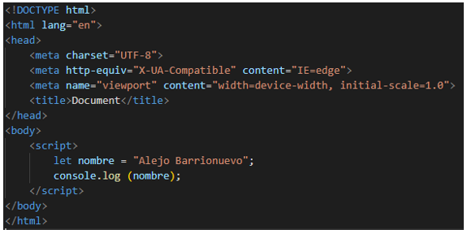
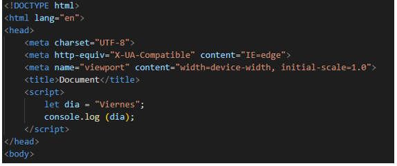
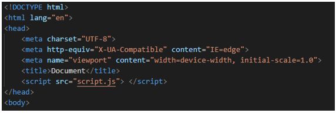
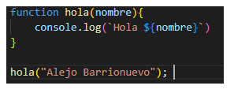
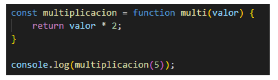
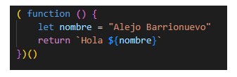
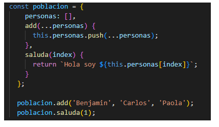
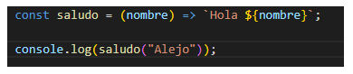
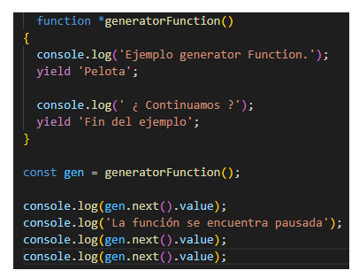
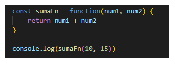

A partir del año 2015 se adquiere un compromiso de liberar una versión del estándar ECMAScript por año.
Utilizando la etiqueta “script” en el body
Utilizando la etiqueta script en el head
Utilizando la etiqueta “script” con el atributo “src” dirigiendo a un archivo externo
Los nombres de las variables (llamados identificadores) se ajustan a ciertas reglas.
Un identificador de JS debe comenzar con una letra, un guion bajo (_) o un signo de dólar ($). Los siguientes caracteres también pueden ser dígitos (0-9).
Dado que JS distingue entre mayúsculas y minúsculas, las letras incluyen los caracteres "A" a "Z" (mayúsculas), así como "a" a "z" (minúsculas).
Las expresiones regulares son patrones que se utilizan para hacer coincidir combinaciones de caracteres en cadenas. En JavaScript, las expresiones regulares también son objetos. Estos patrones se utilizan con los métodos RegExp:
Function declaration.
Function expression.
IIFE (Immediately Invoked Function Expression)
Shorthand method definition.
Arrow function.
Generator function.
Function constructor.
DOM (Document Object Model, o en español, Modelo de Objetos del Documento.) es una interfaz de programación que nos permite crear, cambiar, o remover elementos del documento. También podemos agregar eventos a esos elementos para hacer más dinámica nuestra página.
Para crear el DOM, el navegador web que lee el archivo HTML toma todas sus partes y las devuelve como un objeto que el JavaScript comprende.
La clase Object representa uno de los tipos de datos en JS y Es usado para guardar una colección de datos definidos y entidades más complejas.
El método map() crea un nuevo array con los resultados de la llamada a la función indicada aplicados a cada uno de sus elementos.